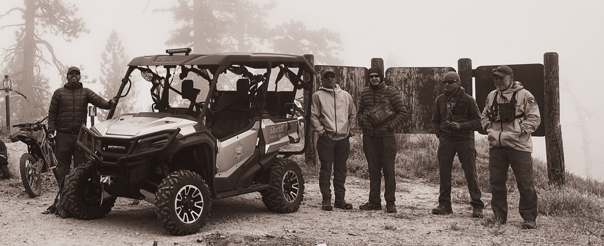

SAR readiness depends on our team's commitment to constant skills refinement. Prospective members bring many of these skills with them, but all of us keep working on the abilities below.
Search and rescue is demanding, technical work. From high-angle rope rescue to swift-water, navigation, and wilderness medicine, every member trains year-round to stay proficient across the whole rescue domain — because when the pager goes off, there's no time to learn on the job.
See how to join →SAR requires familiarity with — and ongoing training in — a wide range of skills. Tap any skill for a brief on how the team trains it.
You bring the drive; we'll provide the training. If you're fit, dependable, and ready to learn, we want to meet you.
Become a Volunteer →